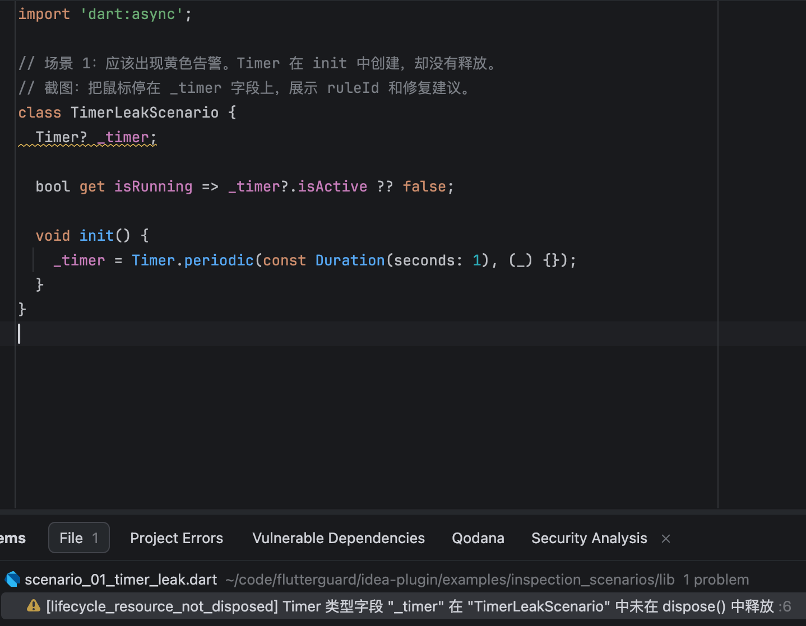
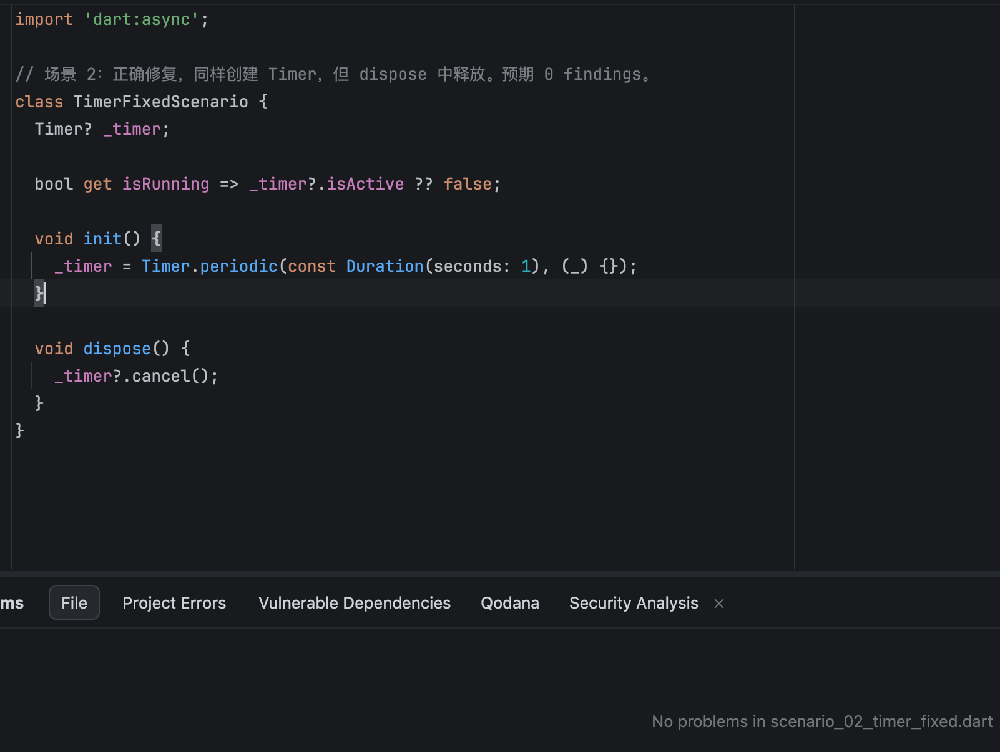
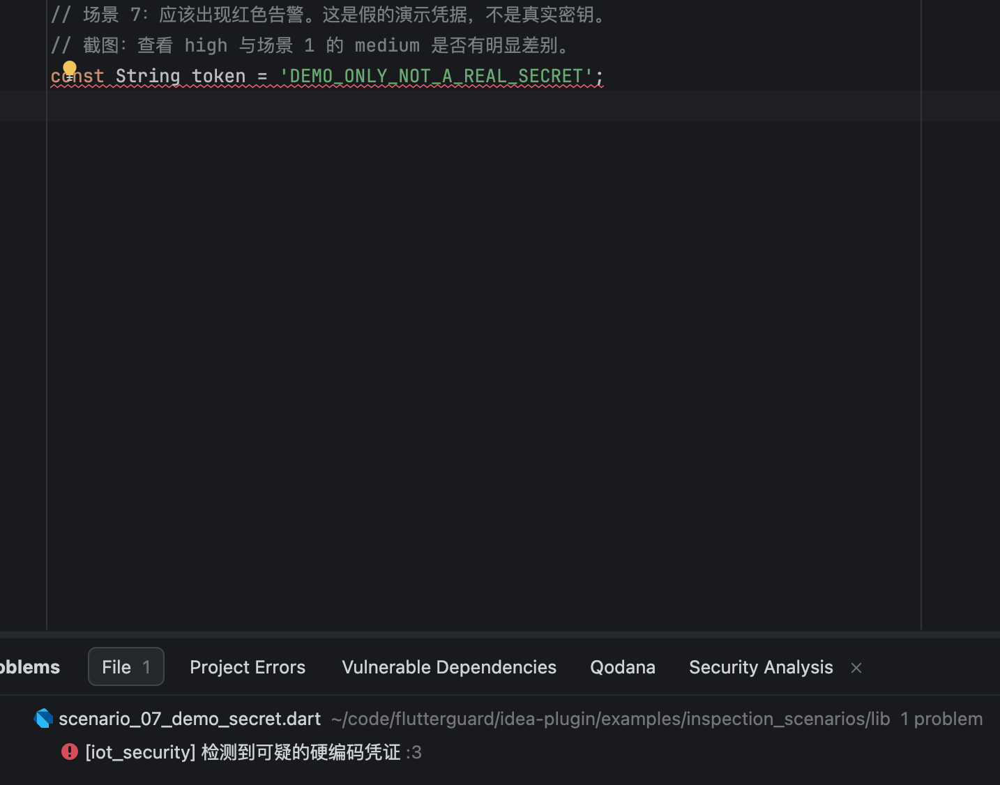
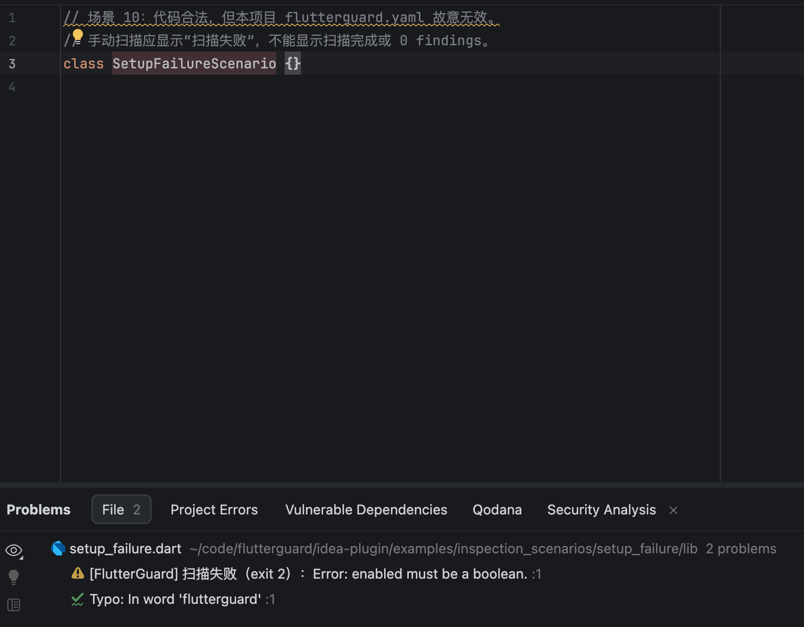
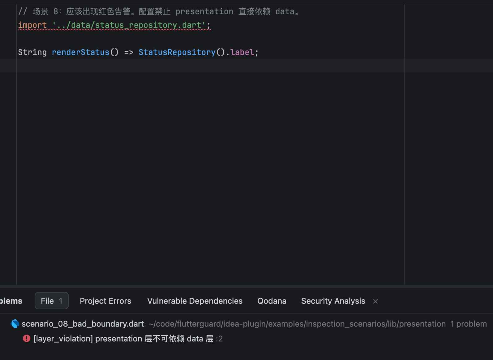

检查显式资源字段和已配置的依赖边界，在源码与 Problems 列表展示证据。 先完成 Dart SDK 配置，再用已保存的文件验证效果。
下列图片来自实际 IDEA 2026.1.5 窗口，随插件安装，查看不需要网络。 黄色对应 medium，红色对应 high；Problems 区分无问题、规则发现与扫描失败。
项目只维护模块路径、公开入口和允许依赖，不需要逐类标注。示意配置：
architecture:
modules:
- name: device
path: lib/device/**
entry_points: [lib/device/device.dart]
allowed_deps: []
- name: presentation
path: lib/presentation/**
entry_points: [lib/presentation/presentation.dart]
allowed_deps: [device]
presentation 导入 lib/device/device.dart：允许；直接导入 lib/device/src/session.dart： module_violation（private_entry）；device 模块内部引用自己的 src：允许。 关系本身不允许时报告 dependency。入口必须由项目维护，工具不推断设计优劣。
Tools → FlutterGuard: Scan Current Dart Package 从当前 Dart 文件最近的 pubspec.yaml 确定包， 不会把 IDE 工作区自动当作嵌套包根。结果在可复制的只读文本报告中显示完整路径、行号、发现和诊断。
覆盖状态区分 not_configured（未配置）、disabled（禁用）、complete（本次范围已检查）、partial（不完整）； 旧 CLI 没有 coverage 时显示无法判断。省略 entry_points 的旧模块配置仍检查允许关系，但不代表公开入口已检查。 scope=file/project/changed 及文件计数只说明本次扫描范围；0 findings 不等于整体模块健康或项目通过。
未信任的 IDEA 项目不执行 CLI；自动检查和手动动作均提示检查未完成，不自动修改信任设置。
扫描仅使用已保存的磁盘内容；单文件高亮只显示该文件。配置、其他依赖文件改变后需重新扫描目标包。 首次配置后的核心场景仍需本机 UI 验收。
以下五张截图保留展示编辑器反馈、修复和失败提示；并非新增模块公开入口场景的验收证据。 当前默认启用架构类检查；Timer、凭据等旧规则只有在项目 rules 中显式 enabled: true 才运行。
创建 Timer 却没有释放时，第 6 行出现黄色标注。 Problems 显示 lifecycle_resource_not_disposed，可据此定位字段和所属类。

dispose 中调用 timer?.cancel() 后，标注消失；Problems 无问题， 手动扫描通知显示 0 findings、0 diagnostics。本类 helper 中的直接清理也被识别。

token 的字符串字面量触发 iot_security，第 3 行显示红色标注。 示例使用假凭据；启发式 finding 必须结合真实用途复核。

enabled 不是 boolean 时显示 exit 2 和具体错误；不能把它当作 0 findings。 截图另含 IDEA 自身的拼写提示，它不是 FlutterGuard finding。

配置 presentation 只允许依赖 domain 后，直接导入 data 会触发 layer_violation， 第 2 行 import 被标红。未配置边界时不推断项目架构。

当前本地包已验证 macOS arm64 / IDEA 2026.1.5。其他平台与旧版 IDE 验证状态独立维护。
FlutterGuard 自有代码与文档采用 MIT License。许可由版权持有人授予； 公开发布者 forest.li，联系邮箱 zhenyu_li1998@163.com。JetBrains 不是本插件许可协议的当事方。 许可证与用户许可说明见随包 META-INF/LICENSE.txt、documentation/eula.md， 第三方条款见 documentation/third-party-notices.txt。
检测通过本地 CLI 读取已保存的源码与配置，配置可能包含包外文件； 单文件 findings 不意味着仅读取该文件。当前审查的执行路径没有源码上传或遥测实现。 路径和诊断可能进入本地日志，临时可执行文件在正常退出时删除。 完整说明见随包 documentation/privacy.md。主动发送支持材料前请去除敏感内容。